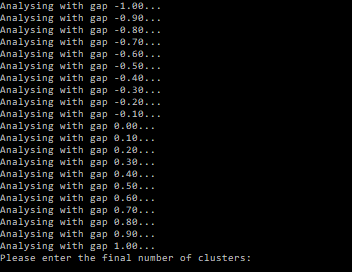

A Python implementation of a method that combines Temporal Needleman-Wunsch (TNW) and aglomerative clustering.
AliClu is a Python implementation of a method that combines Temporal Needleman-Wunsch (TNW) [1] and agglomerative hierarchical clustering with validation [2]. The program receives a set of temporal sequences and outputs the final clusters. The program can be used in an automatic or semi-automatic manner. In the automatic mode, the program outputs the final clusters in separated CSV files and a pdf file with the cluster stability analysis. In the semi-automatic mode, the program first produces a pdf file with dendrograms, tables of averages of clustering indices and graphs with the standard deviation of Adjusted Rand. After analysing this pdf file, the user can input the final number of clusters and the program will output the final clusters and the cluster stability analysis. The python files required to run the program can be downloaded here.
$ pip install -r requirements.txt$ virtualenv [give_a_name]
$ source [give_a_name]/bin/activate #for a linux machine
$ [give_a_name]/bin/activate.ba #for a windows machine
$ pip install -r requirements.txt
Execute the python file AliClu.py:
$ python AliClu.py [-h] [-g] [-tp] [-M] [-d] filename maxClusters automatic positional arguments:
filename Input CSV file with temporal sequences for each patient.
maxClusters Maximum number of clusters to be analysed.
automatic 1 to run AliClu automatically, 0 otherwise.
optional arguments:
-h, --help Show this help message and exit.
-g, --gap Gap penalty. To analyse a range of gap penalties, the argument should be
"[min_gap max_gap step_gap]" where min_gap and max_gap are the minimum and
maximum gap penalties to be analysed and step_gap is the space between
the gap values. To analyse only one gap value simply write "[gap_value]".
Default the gap ranges from -1 to 1 in steps of 0.1.
-tp, --temporalPenaltyConstant
Temporal Penalty Constant. Default tp is 0.25.
-M, --bootStrapSamples Number of bootstrap samples. Default M is 250.
-d, --distanceMetric Distance metric for agglomerative clustering. Only 5 distance metrics
allowed: single, complete, average, centroid and ward. Default d is ward.
The input file must be in comma-separated values (CSV) format, containing the temporal sequences for each subject.
Input file example:
id_patient, aux_encode
33496,"0.B,156.C,314.D,1696.Z"
33499,"0.B,148.Z"
33502,"0.A,120.B,2187.Z"
33505,"0.A,873.B,255.C,1145.Z"
33508,"0.A,358.B,420.C,963.D,239.Z"
33511,"0.A,2192.Z"
(...)
Loading...
The program outputs the final clusters and the cluster stability analysis. The clusters are presented in separated CSV files in a new directory. For example, consider that the program yields 3 clusters. Then 3 CSV files will appear in a directory called '[distanceMetric]_gap_[chosen_gap]_Tp_[tp]_clusters_3':
In this example let us run AliClu in the automatic mode. The synthetic_temporal_sequences.csv is the input CSV file, which contains 3 clusters produced by 3 different continuous-time Markov Chains. Cluster 1 contain patients with id_patient from 0 to 9, Cluster 2 contain patients with id_patient from 10 to 19 and Cluster 3 has the remaining patients.
Let us choose 8 as the maximum number of clusters to be analysed. The command line to run AliClu and obtain the final clusters automatically is:
$ python AliClu.py synthetic_temporal_sequences.csv 8 1Note that no optional argument was used, hence, all the other parameters used in AliClu are set to default. The program correctly founds the 3 clusters and outputs the following:
In this example let us run AliClu in the semi-automatic mode. The input CSV file is again synthetic_temporal_sequences.csv and we choose 8 as the maximum number of clusters to be analysed.
The command line to run AliClu in the semi-automatic mode is:
$ python AliClu.py synthetic_temporal_sequences.csv 8 0which will give the following in the terminal:

The program is asking the user to input the final number of clusters. In this stage, the program produced a pdf file named semi_automatic_analysis.pdf that is meant to auxiliate the user on making the final decision on the number of clusters. The pdf file (download for better visualization in your local pdf viewer) contains:
After analysing the pdf file, the user chooses 3 as the final number of clusters:
Since more than one gap penalty was analysed, the user also has to input the chosen gap penalty. If only one gap penalty was analysed by the program it would not be necessary to input this information. Let us choose again 0.8:
The program ends and produces again the same outputs as in Example 1.